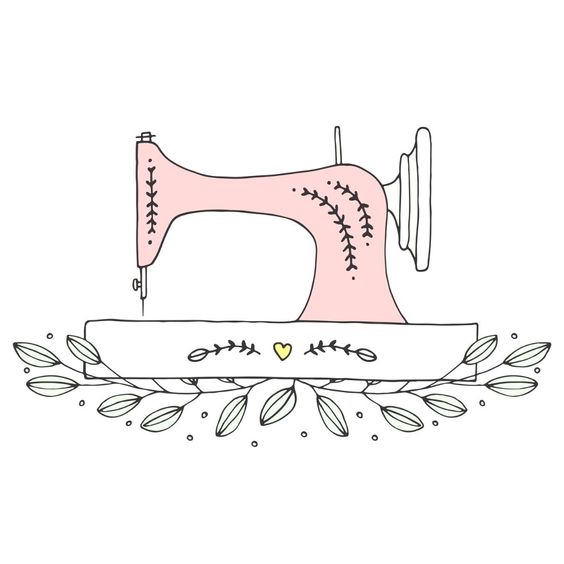
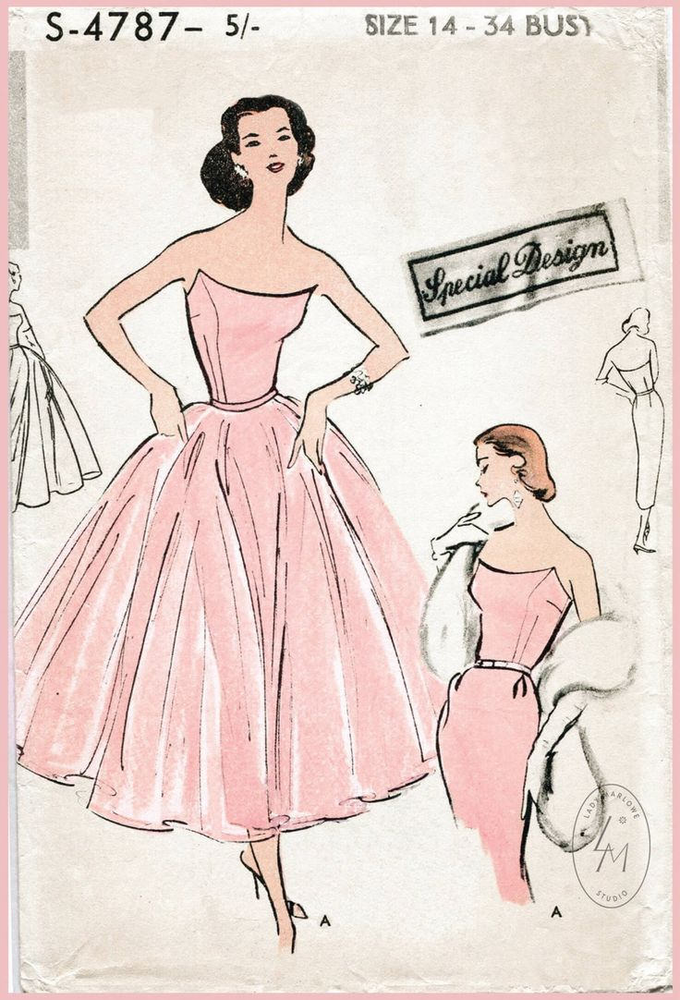

Sewing is one of my favorite hobbies and I am so excited to share it with you!
Sewing has been a fundamental tool used for hundreds of years to create clothing, art, and endless essentials that you use daily. It also used to be a staple skill implemented into every household, but recently, sewing is rapidly becoming less popular. I grew up with my grandma sewing dresses for my dolls and myself. She instilled in me a love for this dying art, and since then, I have made countless alterations, clothing, gifts, etc..
There are various types of sewing, too! All you need is a needle and thread to begin, and I promise that it is not as hard as it seems.
Check out the Resources tab to find some helpful videos and links to help you learn the basic skills and fundamentals of sewing.
If you have any questions, my contact information is listed in the Contact tab.
The possibilities are only limited by your creativity! If you want some inspiration based off of my personal experience, check out the Gallery tab to see some of my creations.
If you are still stuck on what to sew, here is a link with some ideas to help you brainstorm.